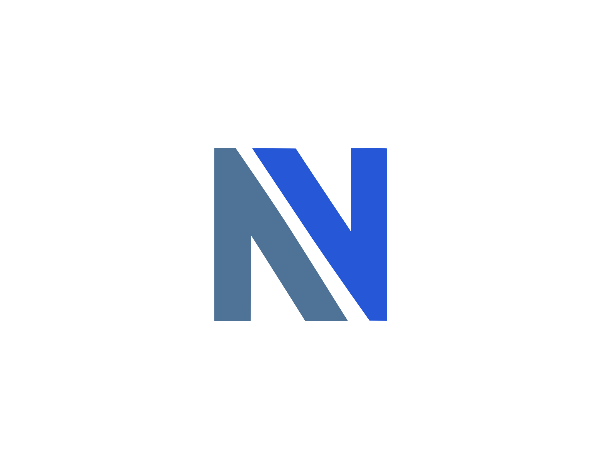

Standard Size (40×40px)

Extra Large Size (120×120px)
Design Features
- Blue Gradient Background: Professional, trustworthy appearance
- Australia Map Outline: Subtle geographic identity
- Modern "A" Symbol: Clean, bold letterform
- Career Growth Arrow: Upward progress and opportunity
- Building Silhouettes: Corporate and career symbolism
- Golden Accent Colors: Premium, success-oriented feeling
- Scalable Vector Design: Crisp at any size
- Professional Shadow Effects: Depth and sophistication